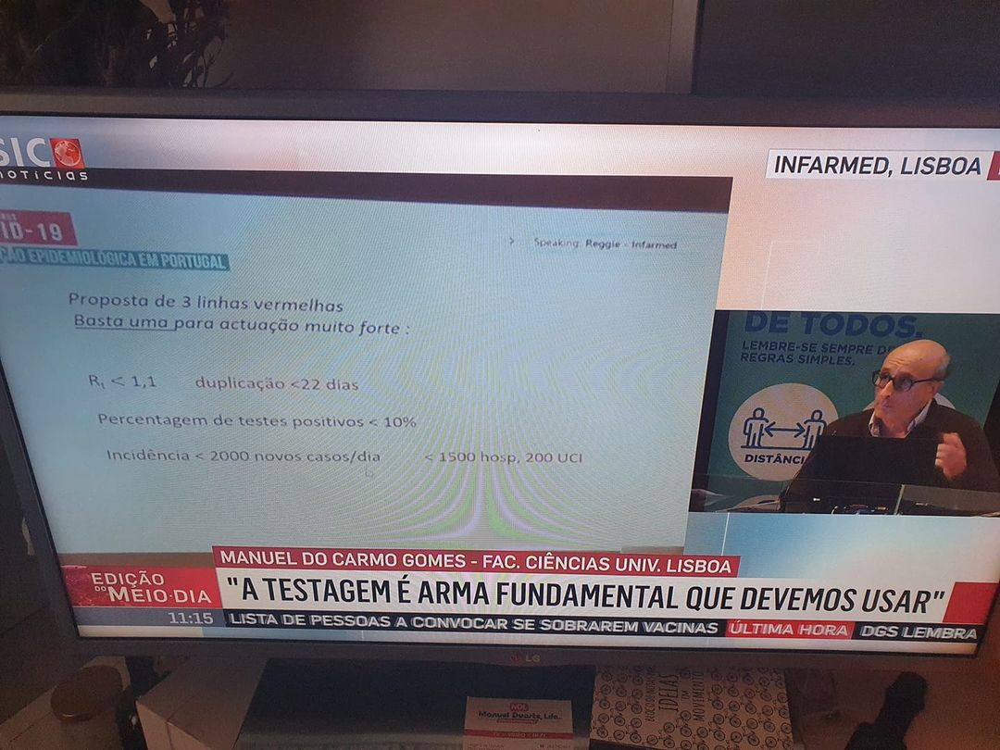

Medidas de Confinamento¶
Mensagem clara em horario nobre¶
Finalmente informacao clara em horario nobre.

Confinamento PT¶
Cada concelho teem medidas diferentes um nivel diferente de risco e de medidas
Este site mostra que medidas esao em vigor para o seu concelho: https://covid19estamoson.gov.pt/
Nivel de Risco:
Este 'e o mapa diario dos concelhos. A cor pode mudar porque as medidas sao decididas a cada 15 dias:
- Mapa dos concelhos: https://covid19.min-saude.pt/ponto-de-situacao-atual-em-portugal/
Confinamento na Europa¶
o ECDC compara as infeccoes dos varios paises: https://www.ecdc.europa.eu/sites/default/files/styles/is_full/public/images/w52_53_COVID_subnational_Last_2week.png
{kind=link}
Este site compara as limitacoes dos governos. Por exemplo a restauracao em ES e NL:
https://reopen.europa.eu/en/map/ESP/6002 https://reopen.europa.eu/en/map/NLD/6001
Criterios de confinamento¶
Manuel Carmo Gomes: "Proposta de 3 linhas vermelhas. BASTA UMA para actuacao muito forte"
Criterios:
- Positividade tem que ser menor que 10% (idealmente 5%):
- Rt menor que 1.1:
- Casos < 200/dia:
- Hospitais < 1500, UCI < 200:

Sumario Observador: https://observador.pt/programas/emissao-especial/a-testagem-e-nao-o-confinamento-e-a-arma-principal-que-devemos-usar
Saida de MCG das reunioes: https://sicnoticias.pt/especiais/coronavirus/2021-02-09-Manuel-Carmo-Gomes-explica-por-que-razao-decidiu-deixar-de-integrar-as-reunioes-do-Infarmed
Portugal no topo do mundo¶
Janeiro 2021:
Primeiro grafico: Portugal no topo do mundo em casos/1 Milhao.
Segundo grafico: Cada vez fazemos MENOS testes. Os casos positivos por Teste devia ser 4%.


Janeiro 2021 - Hospitais em ruptura¶
Hospital da Guarda em rutura. https://sicnoticias.pt/especiais/coronavirus/2021-01-06-Hospital-da-Guarda-em-rutura.-Imagens-mostram-camas-amontoadas-nos-corredores
Sera' fake news? sera' em portugal? sera' de ontem? etc etc
A forma mais simples de confirmar isso 'e ver a noticia seguinte:
"O Hospital da Guarda confirma que o momento é muito difícil e anunciou já que vai redimensionar o espaço na urgência geral para diluir os doentes no espaço. As imagens divulgadas esta quarta-feira pela SIC mostram uma urgência não covid quase sem espaço, com doentes acamados nos corredores."